シェーダーは、置くだけ
ISF や WGSL のファイルをフォルダに入れれば一覧に出る。再起動も変換もいらない。タイルはそのエフェクトの実際の動き。
.fs 420 ／ .wgsl 273
Shadertoy のシェーダーが曲のビートに反応する。After Effects の式と CSS アニメーションが同じテキストの上で動く。p5.js のスケッチが Lottie の上に重なる。ネットのコードを貼れば、そのまま動く。オープンソースの動画編集ソフト。
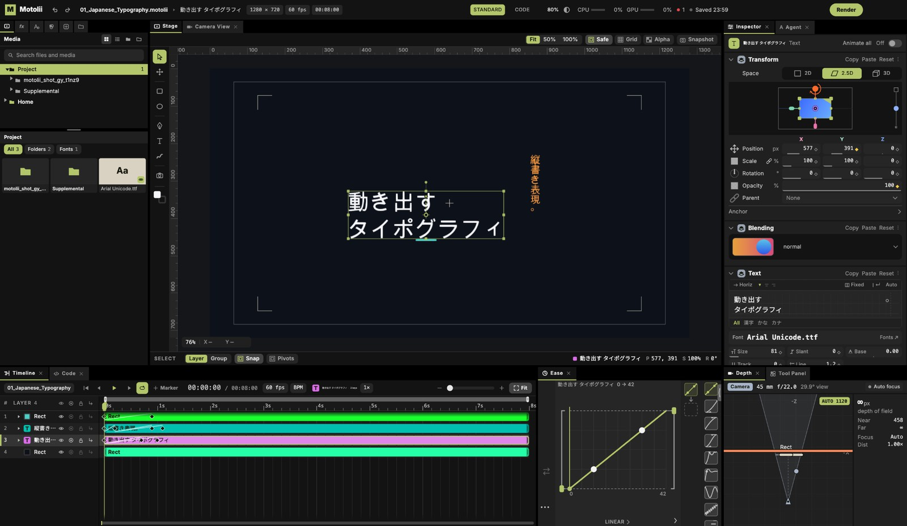
Motolii にはエフェクトが一つも内蔵されていません。ぼかしも、ドロップシャドウも、グラデーションマップも、ぜんぶただのファイルです。
だから開いて中が見えるし、写して直せるし、気に入らなければ差し替えられる。
シェーダーはフォルダに置く。式は貼る。書けない所は AI に頼む。
レイヤーを選んでやりたいことを書く。エージェントが AE の式や ISF を書いて、保存すると絵が変わる。新しい物は新しいカードで増え、元のコードは頼んだときだけ変わる。
ACP 対応。Claude Agent、Codex、Gemini CLI など、どのエージェントでも使える。
ISF や WGSL のファイルをフォルダに入れれば一覧に出る。再起動も変換もいらない。タイルはそのエフェクトの実際の動き。
AE の wiggle や thisComp、Cavalry のアニメーターや oscillator がそのまま動く。貼れば式カードが付く。each でコピーを 1 つずつ、relate・force で複数レイヤーをまとめて動かせる。
キーフレームの間にカードで付く。後から変えても重ねてもカーブはそのまま残る。
いまの実際の画面。
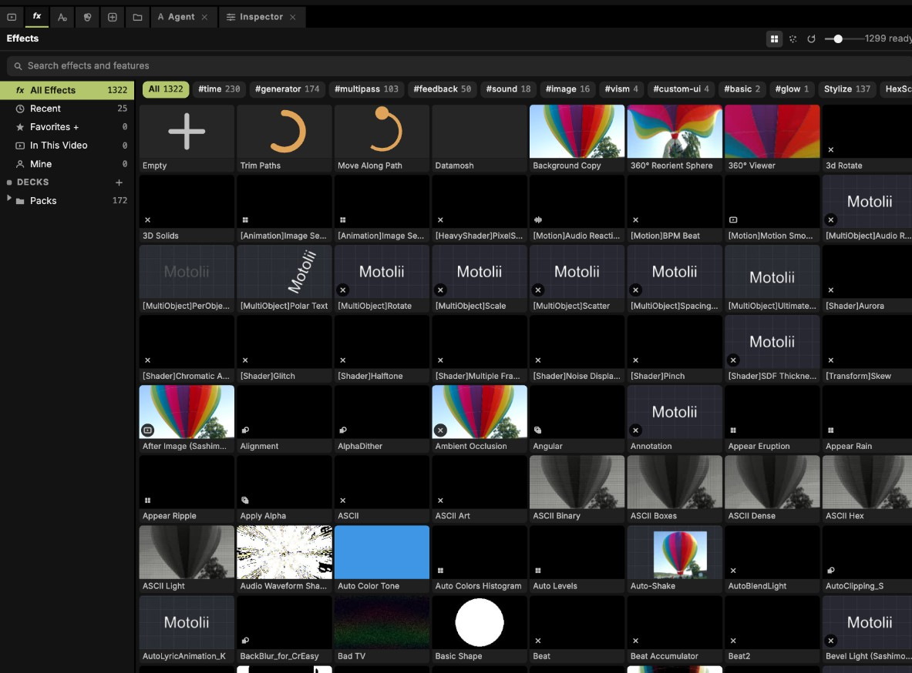
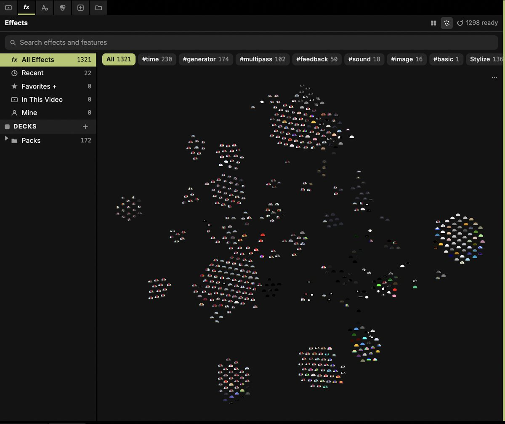
タイルはそのエフェクトの実際の動き。マップに切り替えると、仕上がりの近いもの同士が t-SNE で寄る。名前を知らなくても探せる。マウスを乗せると Stage の絵に仮にかかる。最近使った物、お気に入り、この動画で使用中、自作、デッキ、パックで絞れる。デッキはコードにして人に渡せる。音・動画・2 レイヤーが要る物や未対応の物はバッジで分かる。
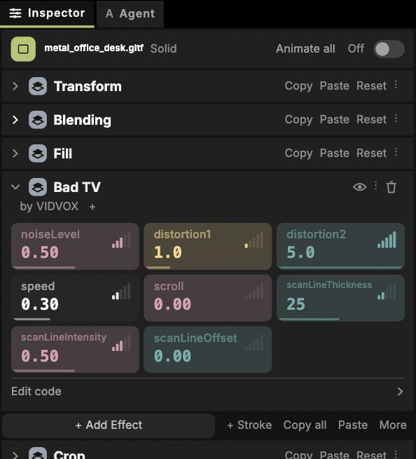
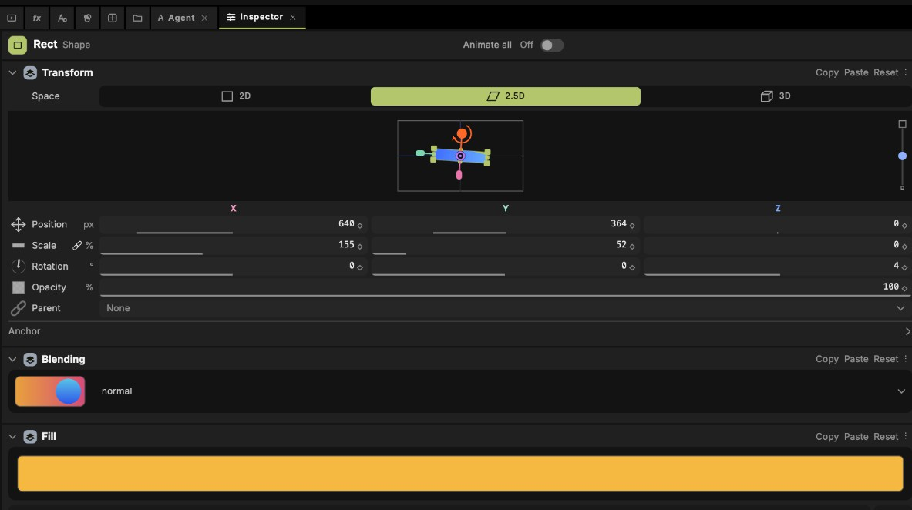
名前とスライダーを横に並べる「行」は、パネルを広げても間延びするだけ。Motolii の値はタイル状のブロックで、広げると列が増える。ふつうの幅で 3 列、値が 30 個あってもカードは短い。同梱エフェクト約 1,280 本は、値を 1 つずつ動かして絵の変わり方を 0〜10 で調べてある。効く値ほど浅黄・撫子・青磁。ほとんど変わらない値はグレー。
カードはどれもエンジンの宣言から 1 つの部品で描く。新しいエフェクトや新しい種類のレイヤーにも、画面のコードを足さずにカードが付く。作者とライセンス、タグ、キーフレームの印もカードごとに出る。
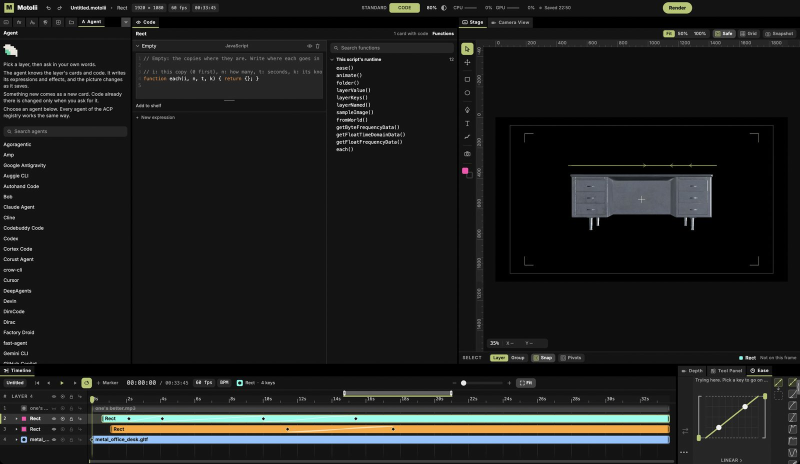
上の CODE で切り替わる並び。真ん中に Code、隣に Stage、下に Timeline。左に Agent と Inspector と棚。エージェントに頼む、セルで変更を読む、Stage で見る、をタブを替えずにやれる。並びは shelves/workspaces/code.layout のファイルで、好きに並べ替えられる。
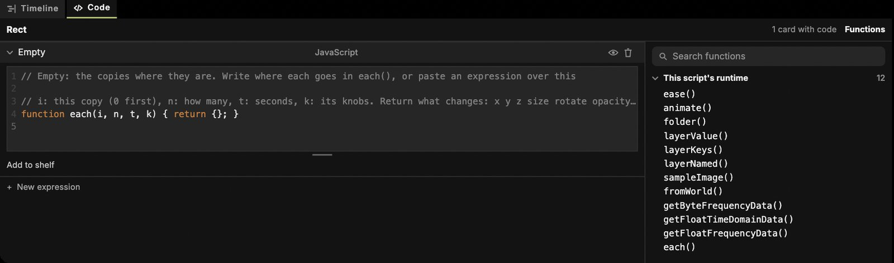
コードを持つカードごとに 1 セル。セルとカードは同じテキストで、打てばスライダーと絵が動く。AE の式は補完が効き、セルの下に再生位置での値か「Error at line 3」のようなエラーが出る。横の Functions は AE と同じ分け方の一覧で、Motolii でまだ動かない名前には印が付く。セルの並べ替え・オフ・削除・改名・折り畳み、棚への保存ができる。
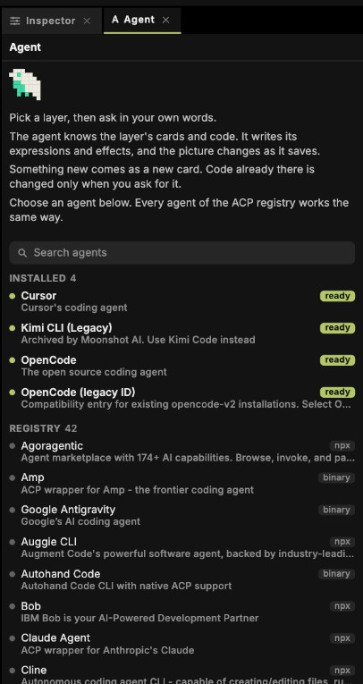
Zed や JetBrains と同じ ACP レジストリから選ぶ。Claude Agent・Codex・Gemini CLI・Cursor・Cline など。頼むと、Inspector の全カードと値、各カードのコード、Timeline で選んだ区間、AE の式のリファレンスが一緒に渡る。コードは頼む前にレイヤー専用の写しになるので、棚の元ファイルは変わらない。新しい物は新しいカードになる。道具の呼び出しは差分付きで並ぶ。モデル・effort・モードはエージェントが申告した物がそのまま出る。
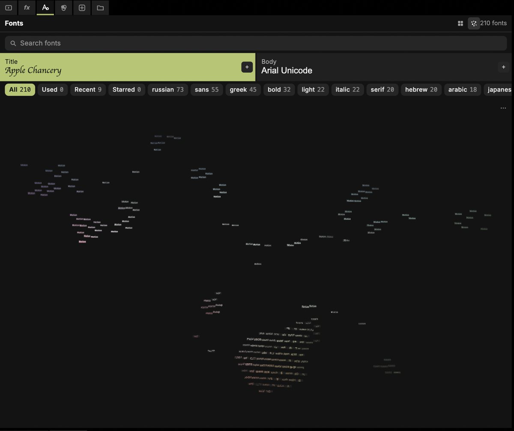
各フォントはそのフォント自身の字形で並ぶ。マップでは似た字形が寄る（FontCLIP のモデルがあればそれで）。上に見出しと本文の 2 つ。押すと選んだテキストにかかり、何も選んでいなければ新しいテキストができる。使用中・最近・スター、書体や文字の種類で絞れる。
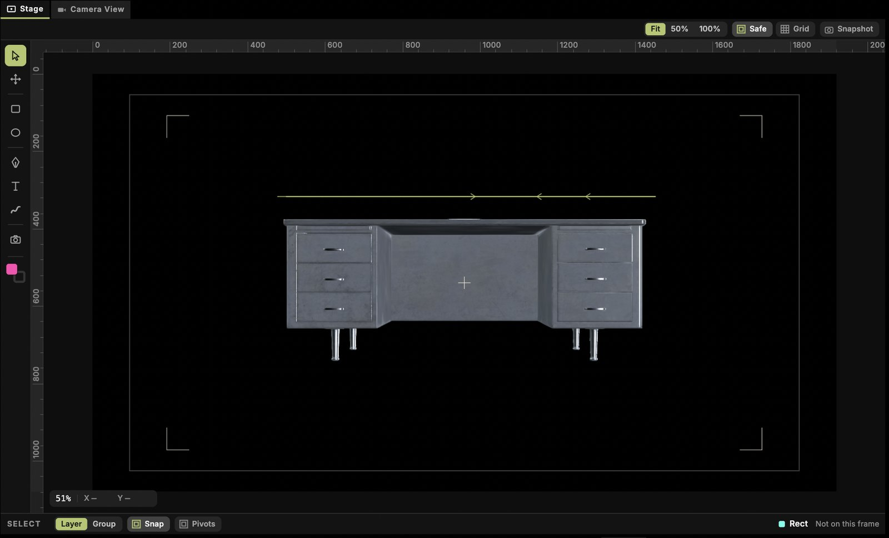
選択・移動・矩形・楕円・ペン・テキスト・ブラシ・カメラ。何も無い所をドラッグすると投げ縄。ブラシは筆圧が効く。ルーラーからガイドを引き出せて、端とガイドにスナップする。選んだレイヤーの軌跡、ナビゲーター、カメラのギズモ。Snapshot を押している間だけ、取っておいたフレームと見比べられる。
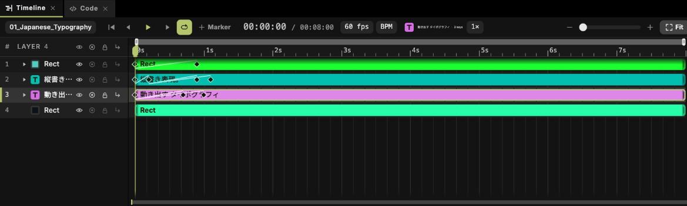
テンポをタップすると拍のグリッドが出て、キーフレームやレイヤーの端が拍にスナップする。バーの上にはキーフレームの間のカーブ、動画のコマ、音の波形。切った動画はスリップ編集で中身だけずらせる。マーカーはその場でドラッグ・改名。
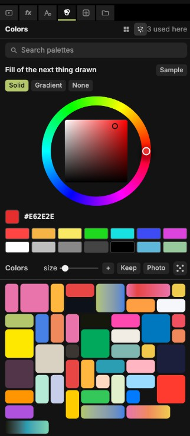
色相リングと 16 進。Mac のスポイトで画面のどこからでも拾える。Media で選んだ写真からパレットを作れる。パレットは図形を敷き詰めた「ベント」でも見られる。単色・グラデーション・なし。テキストは選んだ文字だけに色を付けられる。
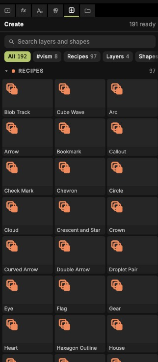
テキスト・カメラ・調整レイヤー、図形、立体（Ring・Gem・Cube・Floor）、ライト（Sun・Point・Spot）、質感（Glass・Lacquer・Bubble など）、レシピ、式。式のタイルを複数のレイヤーにかけるとリレーションになる。貼ったコードもタイルで残る。
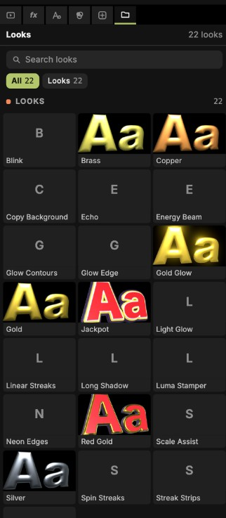
エフェクトと値のひとまとまりを保存しておき、ダブルクリックでかける。Gold・Brass・Neon Edges・Long Shadow などが入っている。
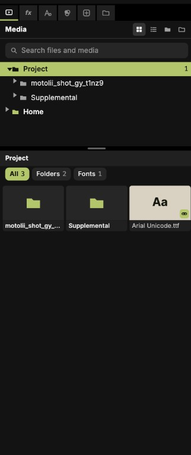
プロジェクトのフォルダとディスクのファイルブラウザ。置く・差し替える・図形を塗る。複数選ぶと順に並べて置く。CLIP STUDIO や OpenToonz の XDTS タイムシートを読んで、レベルごとにレイヤーにできる。
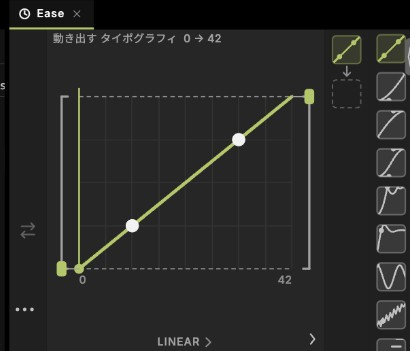
ハンドルをつかんで直接。カードを重ねると、上の結果にさらにかかる。プリセットは乗せると動き、中身は a + (b - a) * bezier(u, …) のような 1 行の式のファイル。
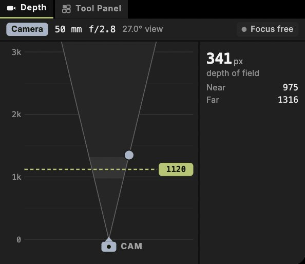
レンズを上から見た図に、レイヤーが奥行きの位置で並ぶ。板を押すとそこにピント。横にドラッグで焦点距離。被写界深度と手前・奥の限界も出る。
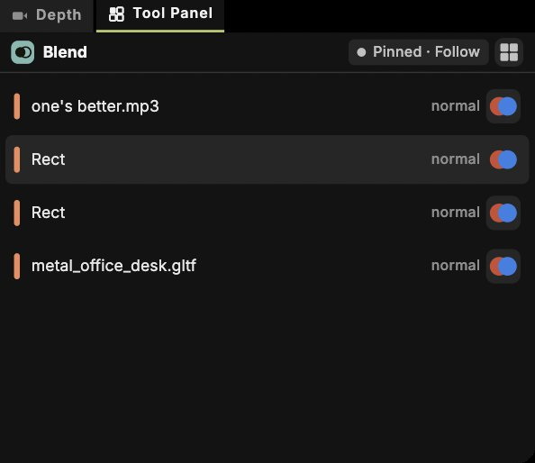
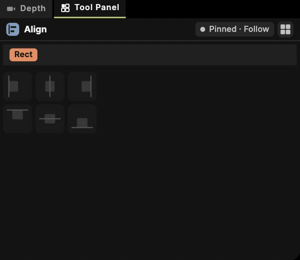
Blend は重なり順と合成モードを、重なる円で見せる一覧。Align は選んだレイヤーをキャンバスの端や中央に揃える。自分の道具も Dart 数行でここに足せる。
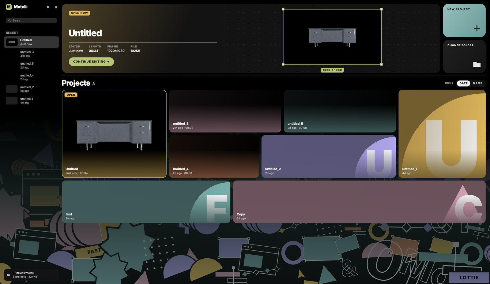
ホームには前回のプロジェクトが大きく出る。プロジェクトはカードで並び、複製・書き出し・ゴミ箱もカードから。保存はいつも自動。Render は MP4（H.264）・HEVC の .mov・GIF・PNG 連番・JPEG 連番。解像度・フレームレート・画質・モーションブラー・背景を選べる。
.fs.wgsl配布用のアプリはまだありません。いまはソースからビルドして動かします。まっさらな状態からだと 1〜2 時間ほど。できあがったものは、ビルドした Mac でだけ動きます。
# クローンして入る
git clone https://github.com/oshikaidesu/motolii.git
cd motolii
# 部品を入れる（GStreamer・ffmpeg など）
brew bundle
# エンジンをビルド（初回 約5分）
engine/build.sh
# アプリを開く
app/tool/live.sh